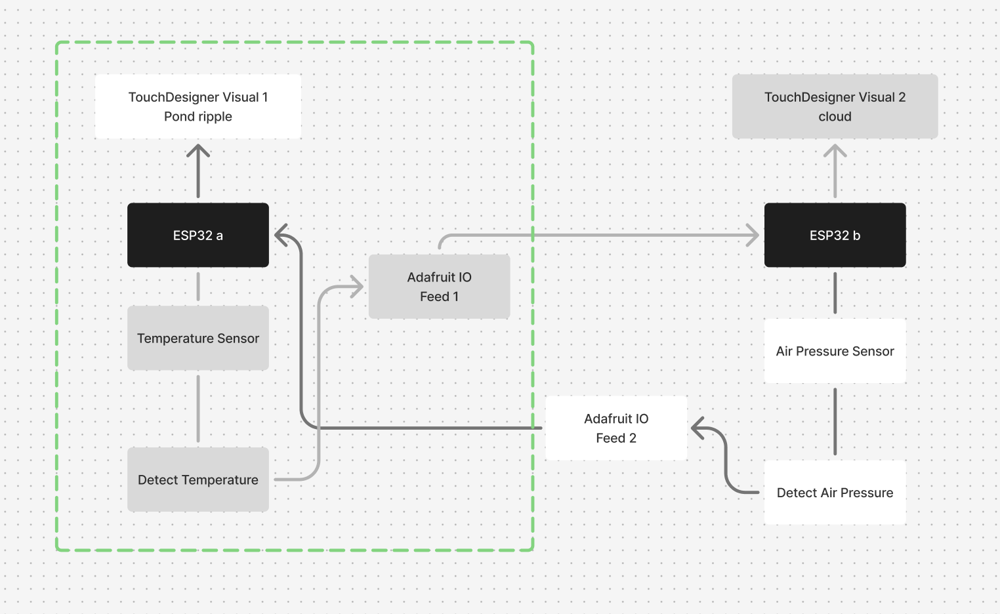
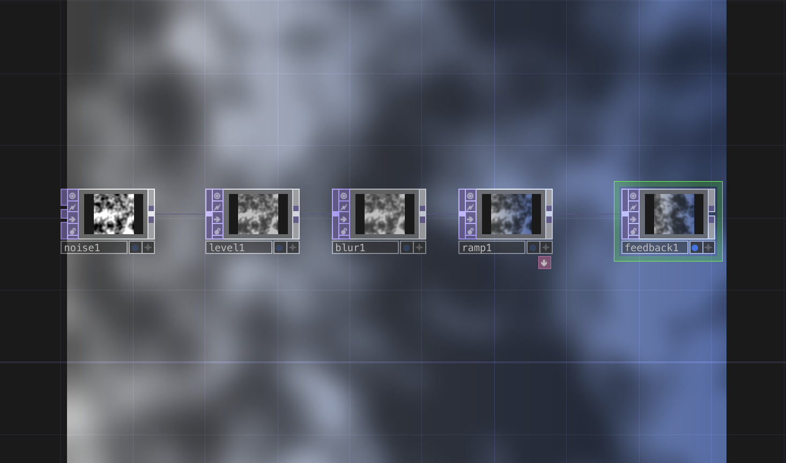
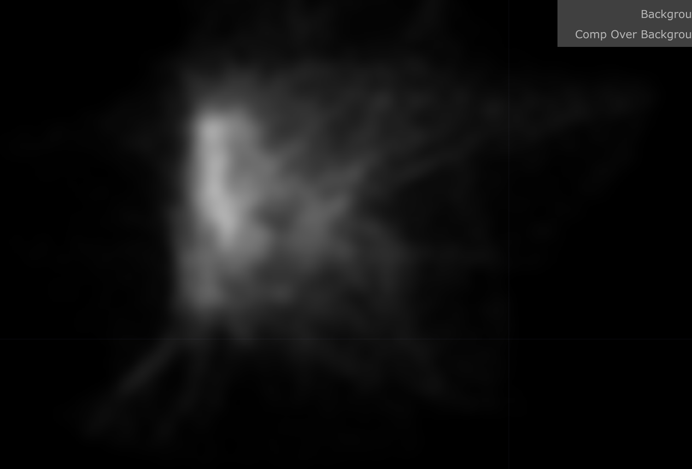
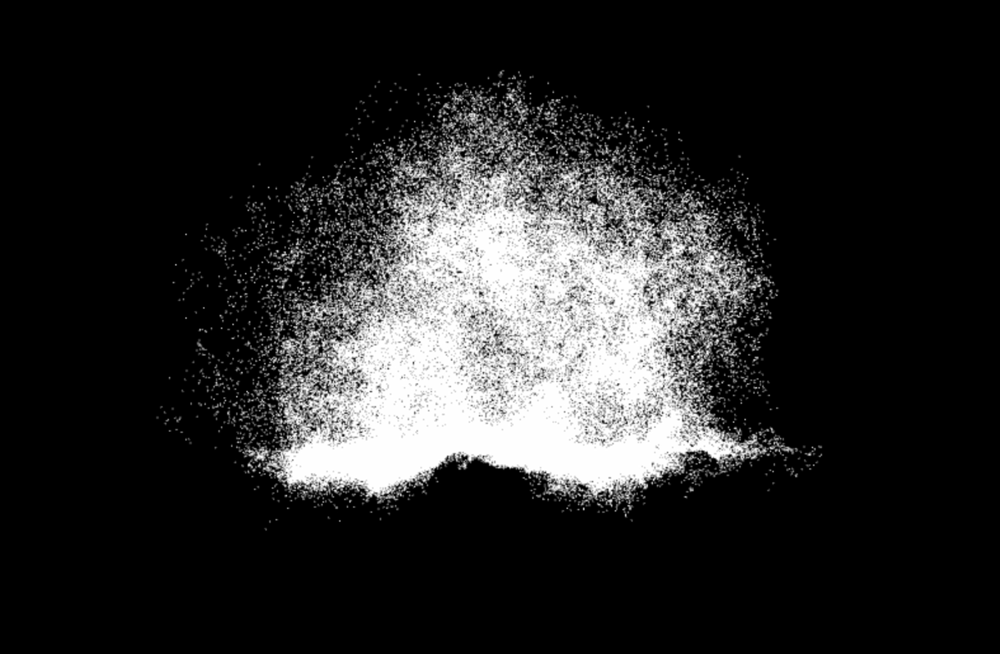
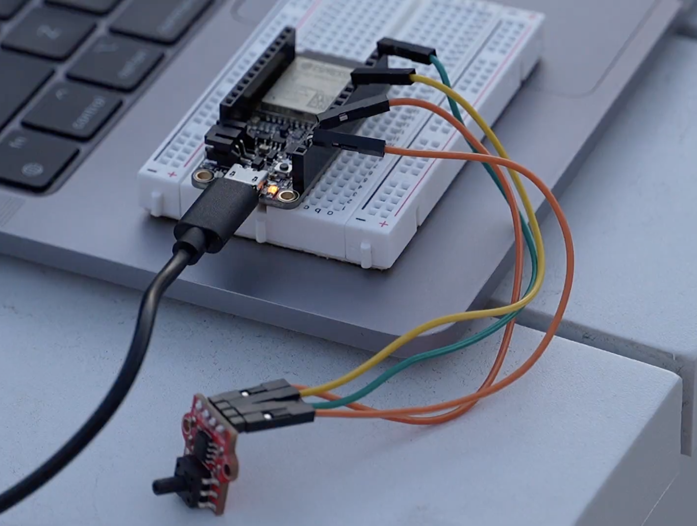

Cloud and Pond
01. Concept
JR's and my creatures are clouds and ponds,they are in the same environment and receive relevant data. The diagram shows our Work flow.

My clouds are affected by JR's temperature sensors. The higher the temperature, the smaller the cloud; the lower the temperature, the larger the cloud. When the clouds are big enough, it rains. The size of the rain is controlled by a air pressure sensor.
This is a team project. To see JR's work, please click here: https://jiaaaruiii.github.io/ACCD-CT3-JR/project3creature/creature.html
02. Process
Step1: TouchDesigner Visualization
My cloud went through two updates. The first time, I wanted to make a simple cloud with Noise components. But Noise's visual was more like a mist than a cloud and didn't have the effect I wanted. I checked all the components and finally found a component called Particle GPU. This component looks better than Noise, but it doesn't reflect the fluffiness of the clouds.


Eventually I found a tutorial and I referenced part of it to make a new cloud. This is the link to the tutorial:
https://www.youtube.com/watch?v=ZgYxo6o-o9s&t=634s
The 3.0 version cloud is the best one. I learned something new from the tutorial.

Step2: Coding
To connect JR's data, we have to use each other's feed. Base on the code we learned in class, here is our test code.

Step3: Hardware Connection
Connecting the air pressure sensor was a little challenging for me.
This is my first time using this sensor and even though it says Chinese on it I still don't know how to operate it.
Thanks to JR, she help me find a link:
https://www.homemade-circuits.com/hx710b-air-pressure-sensor-datasheet-how-to-connect/
I successfully connected this sensor according to the interface cross-reference on Adafruit.

03. HUGE PROBLEM
Cloud2-Test
When we tested the code in class with a second visual, it worked.
软件环境
- TouchDesigner - 主要开发平台
- Arduino IDE - 传感器编程
- OSC协议 - 数据通信
技术架构
Arduino → Serial/USB → TouchDesigner → 视觉处理 → 投影输出
整个系统采用模块化设计，每个传感器的数据流可以独立调试和优化。 TouchDesigner中使用了多层反馈循环来创造"生态感"的视觉效果。